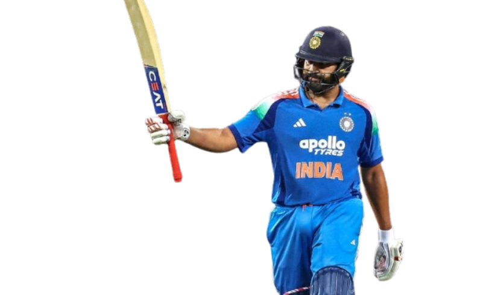

THE HITMAN
1987
"hard work beats talent
when talent doesn't work hard......"

Rohit Sharma is an Indian cricketer and the current captain of the Indian national team in limited-overs formats. He is widely regarded as one of the best batsmen in the world and has achieved numerous records in international cricket. Born on April 30, 1987, in Nagpur, Maharashtra, Rohit made his international debut in 2007 and quickly established himself as a key player for India. He is known for his elegant stroke play, powerful hitting, and ability to score big centuries. Rohit has been a crucial part of India's success in various tournaments, including the ICC Cricket World Cup and the ICC T20 World Cup.